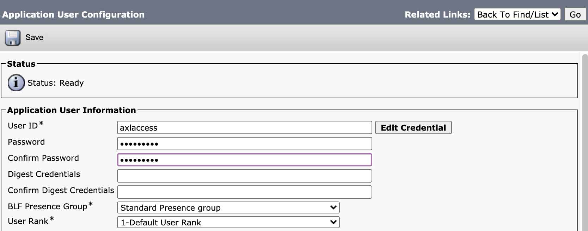
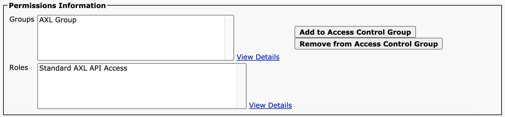

- Documentation: ciscoaxl.readthedocs.io/en/latest
- Repository: github.com/levensailor/ciscoaxl
- PyPi: pypi.org/project/ciscoaxl/
- AXL Schema: developer.cisco.com/docs/axl-schema-reference
ciscoaxl is a simple to use python sdk for Cisco Unified Communications Manager AXL API.
Installation
pip install ciscoaxl
SDK Usage
from ciscoaxl import axl
cucm = '10.10.20.1'
username = 'axlaccess'
password = 'axlpassword'
version = '12.5'
ucm = axl(username=username,password=password,cucm=cucm,cucm_version=version)
users = ucm.get_users()
Troubleshooting
To use the AXL API, ensure the AXL SOAP service is running..
Enable the AXL SOAP interface
- Browse to the CUCM Serviceability page on https://
/ccmservice - Tools > Service Activation:
- Enable the "Cisco AXL Web Service"

To use the AXL API, ensure your user is assigned the AXL role
Create an AXL Service Account
Step 1 - Create an AXL User Group
CUCM > User Management > User Group > Add.
Step 2 - Assign the AXL role to the group
Click on "Related Links", select "Standard AXL API Access", and "Assign Role to Group"

Step 3 - Create a new Application User
CUCM > User Management > Application User > Add.

Add the User Group "AXL Group" to this user so that after saving the roles of the new Application User appear as in the following screen:
